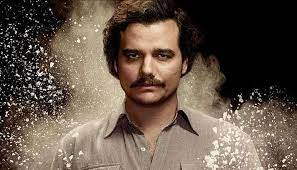

Visão Geral
"Narcos" é uma série de televisão que retrata a ascensão e queda dos cartéis de drogas na América Latina. A série é conhecida por sua narrativa envolvente e personagens complexos.
A primeira temporada, composta por dez episódios, foi disponibilizada na plataforma de streaming Netflix desde 28 de agosto de 2015. Entre os principais artistas estão incluídos Wagner Moura, como o narcotraficante Pablo Escobar,[2] Boyd Holbrook e Pedro Pascal no papel de agentes da DEA enviados dos Estados Unidos para sua captura. A segunda temporada, também composta por dez episódios, foi disponibilizada em 2 de setembro de 2016.
É a primeira produção de Netflix transmitida por uma emissora de televisao americana. A série é exibida na emissora de língua espanhola Univision

Personagem Pablo Escobar interpretado pelo ator Wagner Moura.
Enredo
A série conta a história verdadeira da propagação da cocaína nos Estados Unidos e na Europa, graças à droga do Cartel de Medellín, liderado por Pablo Escobar, enquanto dois agentes da DEA estão no comando de liderar uma missão para capturar e, consequentemente, matar Escobar.
 Policiais americanos interpretados por Pedro Pascual e Boyd Holbrook
Policiais americanos interpretados por Pedro Pascual e Boyd Holbrook
Elenco
Personagens principais:
- Wagner Moura como Pablo Escobar — um narcotraficante colombiano líder do Cartel de Medellín.
- Boyd Holbrook como Steve Murphy — um agente da DEA enviado dos Estados Unidos para capturar Pablo Escobar.
- Pedro Pascal como Javier Peña — um agente da DEA enviado dos Estados Unidos para capturar Pablo Escobar.
- Joanna Christie como Connie Murphy — esposa do agente Steve Murphy.
- Maurice Compte como Horacio Carrillo — um chefe de polícia da Colômbia.
- André Mattos como Jorge Luis Ochoa — um dos fundadores e ex-líder do Cartel de Medellín.
- Roberto Urbina como Fabio Ochoa — um dos fundadores do Cartel de Medellín; irmão de Jorge Luis Ochoa.
- Laura Perico como Marina Ochoa — irmã de Jorge Luis e Fabio, fundadores do Cartel de Medellín.
- Diego Cataño como Juan Diego "La Quica" Diaz — um assassino contratado pelo Cartel de Medellín.
- Jorge A. Jimenéz como Roberto "Poison" Ramos — um assassino contratado pelo Cartel de Medellín.
- Paulina Gaitán como Tata Escobar — esposa do narcotraficante Pablo Escobar.
- Paulina García como Hermilda Gaviria — mãe do narcotraficante Pablo Escobar.
- Stephanie Sigman como Valeria Vélez — uma jornalista colombiana.
- Bruno Bichir como Fernando Duque — um político colombiano e advogado do narcotraficante Pablo Escobar.
- Raúl Méndez como César Gaviria — presidente da Colômbia.
- Manolo Cardona como Eduardo Sandoval — Vice-Ministro da Justiça na administração do presidente César Gaviria.
- Cristina Umaña como Judy Moncada — uma ex-líder do Cartel de Medellín que, depois de Escobar assassinar seu marido Kiko, se aliou ao Cartel de Cáli.
- Eric Lange como Bill Strechner — chefe da CIA na Colômbia.
- Florencia Lozano como Claudia Messina — chefe da DEA na Colômbia.
- Michael Stahl-David como Chris Feistl — um agente da DEA enviado dos Estados Unidos para capturar o Cartel de Cáli.
- Matt Whelan como Daniel Van-Ness — um agente da DEA enviado dos Estados Unidos para capturar o Cartel de Cáli.
- Matias Varela como Jorge Salcedo — chefe de segurança do Cartel de Cáli que se tornou informante da DEA.
- Miguel Ángel Silvestre como Franklin Jurado — Lavador de Dinheiro do Cartel de Cáli.
- Javier Cámara como Guillermo Pallomari — Contador do Cartel de Cáli.
- Damián Alcázar como Gilberto Rodríguez Orejuela — um dos fundadores e líder do Cartel de Cáli.
- Alberto Ammann como Helmer "Pacho" Herrera — um narcotraficante colombiano membro do Cartel de Cáli.
- Francisco Denis como Miguel Rodríguez Orejuela — um dos fundadores do Cartel de Cáli e irmão de Gilberto Rodríguez Orejuela.
- Pêpê Rapazote como José Santacruz Londoño — um dos fundadores do Cartel de Cáli.
Personagens recorrentes:
- Luis Guzmán como Gonzalo Rodríguez Gacha — um dos fundadores e ex-líder do Cartel de Medellín.
- Juan Pablo Raba como Gustavo Gaviria — um dos fundadores do Cartel de Medellín; primo de Pablo Escobar.
- Jon Ecker como Léon — amigo de infância de Gustavo que cresceu nos Estados Unidos; encarregado de levar cocaína à Miami.
- Juan Riedinger como Carlos Lehder — amigo de Léon encarregado de distribuir a cocaína em Miami.
- Ana de la Reguera como Elisa Alvarez — colíder do M-19.
- Leynar Gómez como Limón — um taxista cafetão de Medellín, que se torna um dos sicarios de Escobar.
- Martina García como Maritza — uma amiga de Limón que aceita, involuntariamente, a ajudar Escobar.